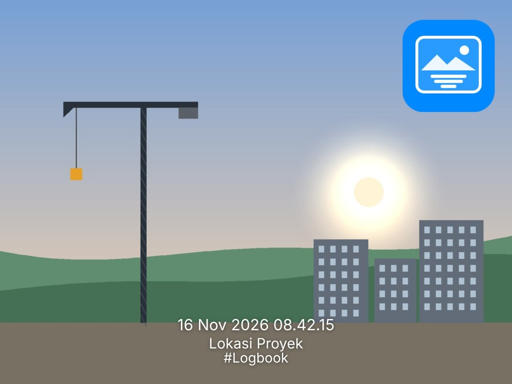
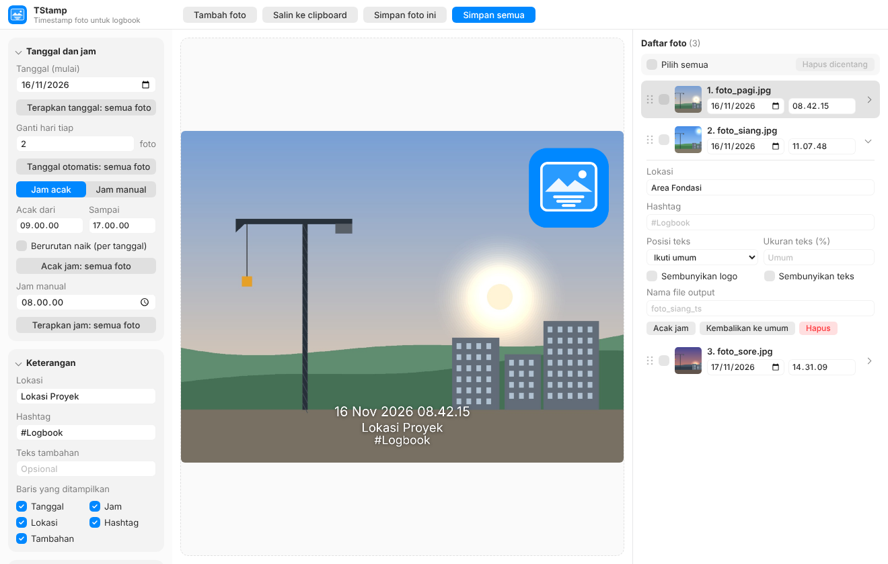

Untuk Windows 10 dan 11
Timestamp foto untuk logbook, dalam hitungan detik.
TStamp menambahkan tanggal, jam, lokasi, hashtag, dan logo pada foto. Masukkan banyak foto sekaligus, atur tanggal dan jam, lalu simpan atau salin.

Fitur
Dibuat untuk laporan logbook yang berisi banyak foto, tanpa mengulang pekerjaan yang sama satu per satu.
Banyak foto sekaligus
Drag and drop, Ctrl+V, atau pilih file. Tiap foto punya tanggal dan jam sendiri.
Jam acak dalam rentang
Tentukan rentang, misalnya 09.00 sampai 17.00. Bisa berurutan naik per tanggal.
Tanggal otomatis
Ganti hari tiap sekian foto, atau terapkan satu tanggal ke semua foto.
Tampilan bisa diatur
Posisi 9 titik, font, ukuran, warna, bayangan, kotak latar, dan format tanggal.
Pengaturan per foto
Lokasi, hashtag, posisi, ukuran, dan nama file bisa berbeda untuk tiap foto.
Simpan dan salin
Simpan satu foto atau semua sekaligus ke satu folder. Ctrl+C menyalin foto ke clipboard.
Cara pakai
Empat langkah dari foto polos sampai foto bertimestamp.
- 1
Unduh dan jalankan
Unduh TStamp.exe dari halaman rilis, lalu klik dua kali. Tidak perlu instalasi.
- 2
Masukkan foto
Drag and drop foto ke jendela, tekan Ctrl + V, atau klik Tambah foto. Unggah logo sekali di panel Logo.
- 3
Atur tanggal dan jam
Pilih tanggal, tentukan rentang jam acak atau jam manual, lalu klik Tanggal otomatis dan Acak jam.
- 4
Simpan atau salin
Klik Simpan semua lalu pilih folder, atau tekan Ctrl + C untuk menyalin foto yang dipilih.
Tampilan
Antarmuka mengikuti pengaturan terang atau gelap di Windows.

Peringatan Windows SmartScreen
TStamp.exe belum ditandatangani digital, jadi Windows bisa menampilkan "Windows protected your PC". Klik More info, lalu Run anyway.